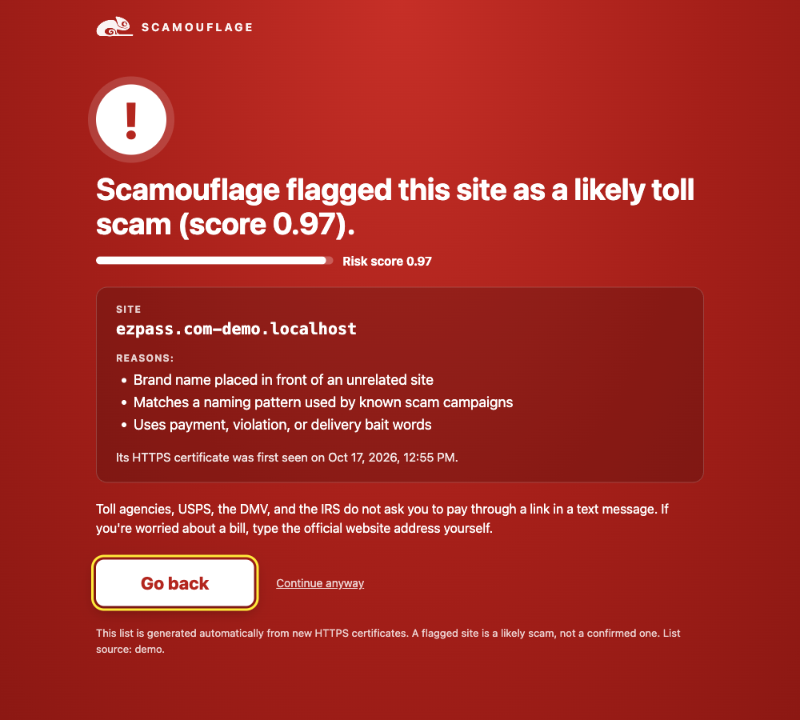

Just caught Demo replay
A likely scam site
–/ 100
· signed on IBM CPACF See the certificate ↗
Right now someone is getting a text that says they owe $4.35 in tolls. The link goes to a site that went online minutes ago. Scamouflage spots that site as it's created, often before the text even arrives.
Just caught Demo replay
· signed on IBM CPACF See the certificate ↗
Websites getting their security certificate right now Demo replay
Minute zero
They pick a name like ezpass.com-pay.win and request a free certificate so the padlock shows.
– fake toll, delivery and government sites in the last 24 hours
Seconds later
Every certificate is published in open logs. We read all of them, not just the ones someone reported.
– certificates read · –/s
Under a millisecond
Brand names in the wrong place, cheap web endings and patterns from known scam groups all raise the score.
– signatures verified
Before the text lands
The site goes on a signed list. If you tap the link, the extension warns you before you can pay.
– new scam sites caught
Last 24 hours, each site counted once
On scam sites the model never saw in training
Measured on our server
Each flash is real work on the chip, from its own activity counters.
Verifying real certificate signatures for one second
– faster on the IBM chip
Same code and data, run twice; only the setting that lets OpenSSL use CPACF changes. RSA isn't accelerated by this hardware, so RSA certificates show about 1× by design.
The 15 newest fake toll, delivery and government sites our AI flagged. Shown as plain text: we never open these sites, so you never have to.
Not on any public scam list when we flagged them.
Already on a public scam list when we saw the certificate.
Loading…
Detection is step one. Every flagged site has a registrar, and every registrar has an abuse desk that must act on phishing reports. Scamouflage looks up that mailbox over RDAP, writes the report from the evidence it already has, and lets you send it in one click.
Open Latest scams. Every row ends with Report to registrar. After a report goes out the row shows when and to whom it was sent, and the same domain is not reported twice in a day.
What a registrar can do: put the domain on clientHold or serverHold, which stops it resolving within minutes to hours. That is faster than waiting for browser blocklists to catch up.
Every hand-off to a mail client and every server send, newest first.
| When | Domain | Registrar | Sent to | How |
|---|
Looking up the registrar's abuse contact…
Free Chrome extension
Tap a link in a "you owe a toll" or "your package is held" text, and Scamouflage shows a full-page warning before you can pay, with the reasons the site looks fake. Every check happens on your own device.

extension folder from our project.chrome://extensions and turn on Developer mode.extension folder.The extension downloads a signed list every 30 minutes and rejects any list that's tampered with or older than the one it has. Demo mode flags a harmless local test page, so a demo never opens a real scam site.